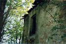
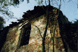
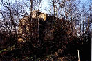

|
Archivio
Storico fotografico
Associazione Culturale Zivido

ottobre 1993

ottobre 1993

gennaio 1995
|
Fattomi
largo fra le sterpaglie, salgo i gradini che portano
al piccolo ballatoio in cima all'alto muro a picco sull'antica
strada romana. Sotto i piedi scricchiolano una moltitudine
di foglie e rametti secchi quasi che la natura, pi�
benigna degli uomini, pare abbia voluto stendere un
tappeto. Una vecchia "rizzada" si mostra a
sprazzi e due sedili di pietra, povere sentinelle all'ingresso
oltraggiato, invitano al riposo.
Mi siedo e volgo lo sguardo alla campagna digradante
pi� sotto inondata di sole che gioca sul mio viso, complici
le foglie degli alberi che sovrastano il luogo. Come
attraverso le multiformi ed irreali luci di un caleidoscopio,
alleato il silenzio, mi sento avvolgere da una piacevole
sensazione di calma che ben presto svanisce.
Sono le incombenti mura che mi richiamano alla realt�,
triste realt� di abbandono e di incuria, di villania
dell'uomo che le ha offese, di una storia antica dimenticata.
Alfine mi alzo e, lentamente fra gli sterpi ed i bassi
rami, mi accingo a fare il loro periplo.
Dall'intonaco sbrecciato e squarciato come orribile
ferita i mattoni nudi narrano la storia degli ignoti
muratori che con pazienza e gusto li hanno disposti
quasi a creare una sorta di irreale geometria; materiale
strano che pare provenga da un mondo pi� antico dove
sul luogo regnava l'opulenza del commercio.
Alzare lo sguardo � fatica e strazio dove le finestre
sono occhiaie vuote di chi non ha pi� lacrime da versare;
e pi� sopra ci� che rimane del tetto spunta con le travature
che paiono braccia tese alla supplica inascoltata.
Dove la preghiera dell'umile ha miglior ascolto se non
qui in questo piccolo edificio; sacro per una moltitudine
di pellegrini; sacro perch� racchiude lo spirito dei
tempi; sacro perch� intimamente parte della natura che
lo circonda; sacro perch� � anche la nostra storia pi�
vera di uomini inquieti; sacro perch� � la casa dell'Onnipotente
e la Sua Bont� non pu� essere anche in questo modo offesa.
A tale vista non posso trattenere un improvviso sentimento
di disgusto e vergogna, ... e non lo trattengo.
(Pierino Esposti - ottobre 2000)
|


{kind=link}
{kind=link}
{kind=link}